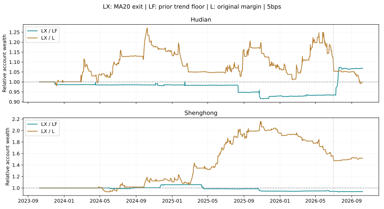

趋势底仓加退出条件：MA20能减少下跌损失吗？
固定一条退出条件 · 256组完整账户 · 不改默认 · 历史证据，不是独立盲测
结论：局部改善很小，还不能替换原方案
沪电融资的上轮趋势底仓方案，加入退出条件后，净收益从1140.69%提高至1225.41%，最大回撤从26.71%降至26.70%，只减少约0.015个百分点。完整周期胜率从24/30（80%）变为30/39（76.92%）。更重要的对照是原默认方案：净收益1226.51%、回撤25.20%，新版本并未提供更低回撤。
胜宏融资净收益从550.44%降至509.38%，回撤从49.63%降至48.93%，但仍高于原方案48.39%。收益下降本身不构成淘汰理由；本轮主要问题是回撤改善微弱、尾部和更早历史表现不一致。新增退出条件可保留为研究证据，暂不更换默认。
固定规则与作用范围
沿用上轮规则：前日收盘高于MA60且MA120较20日前上升，财报增长为正、RSI(2)>60时，将原本清仓的目标改为50%。本轮只增加一条：若前日收盘低于前日已完成的20日均线，取消这部分新增50%目标，恢复原清仓目标。前日重新站上MA20且其他底仓条件仍成立时可恢复。
只使用前日完成数据，按原计划09:45或10:00尝试成交，不能在今天跌破均线的一刻立即退出。其他原D目标不变：RSI低位要求的100%现金或150%融资目标仍保留。这个版本只约束新增底仓，不是整个账户的止损规则。新增50%底仓本身不加杠杆。
20日参数采用此前已使用、用户也提出过的常见观察周期，本轮没有搜索5／10／20日赢家，也没有根据7月跌势重选阈值。复用原成交引擎，仅修改目标日程；没有更改买入参数、执行时刻或默认方案。
三年完整账户：2023-10-09至2026-10-08
| 股票／方案 | 净收益 | 5分钟最大回撤 | 平均仓位 | 完整周期胜率 | 盈利日／全部日 | 最差5%日均收益 |
|---|---|---|---|---|---|---|
| 沪电／全仓持有 | 423.59% | 48.19% | 98.80% | 无已结束周期 | 374/727=51.44% | -7.28% |
| 沪电／原现金 | 537.26% | 19.18% | 44.16% | 76/109=69.72% | 278/727=38.24% | -4.32% |
| 沪电／原融资默认 | 1226.51% | 25.20% | 59.37% | 74/102=72.55% | 281/727=38.65% | -6.05% |
| 沪电／固定50% | 156.82% | 27.08% | 49.87% | 无已结束周期 | 375/727=51.58% | -3.72% |
| 沪电／上轮趋势底仓·现金 | 480.99% | 22.51% | 58.43% | 25/35=71.43% | 332/727=45.67% | -4.60% |
| 沪电／上轮趋势底仓·融资 | 1140.69% | 26.71% | 74.19% | 24/30=80.00% | 334/727=45.94% | -6.31% |
| 沪电／增加MA20退出·现金 | 524.22% | 22.35% | 57.23% | 33/46=71.74% | 329/727=45.25% | -4.55% |
| 沪电／增加MA20退出·融资 | 1225.41% | 26.70% | 73.00% | 30/39=76.92% | 331/727=45.53% | -6.21% |
| 胜宏／全仓持有 | 818.57% | 55.12% | 99.55% | 无已结束周期 | 340/727=46.77% | -8.62% |
| 胜宏／原现金 | 191.85% | 34.50% | 38.15% | 61/98=62.24% | 226/727=31.09% | -5.63% |
| 胜宏／原融资默认 | 300.94% | 48.39% | 53.04% | 58/96=60.42% | 225/727=30.95% | -8.37% |
| 胜宏／固定50% | 264.75% | 32.39% | 50.02% | 无已结束周期 | 340/727=46.77% | -4.30% |
| 胜宏／上轮趋势底仓·现金 | 376.00% | 36.74% | 52.35% | 16/26=61.54% | 283/727=38.93% | -5.86% |
| 胜宏／上轮趋势底仓·融资 | 550.44% | 49.63% | 67.05% | 18/27=66.67% | 282/727=38.79% | -8.28% |
| 胜宏／增加MA20退出·现金 | 323.94% | 35.72% | 51.12% | 24/38=63.16% | 281/727=38.65% | -5.86% |
| 胜宏／增加MA20退出·融资 | 509.38% | 48.93% | 65.83% | 22/35=62.86% | 279/727=38.38% | -8.30% |
各账户100万元独立起步，单边滑点5基点。最大回撤按5分钟采样及日收盘，未覆盖真实逐笔极值。完整周期指空仓到再次空仓，不能称作日内做T胜率。未结束持仓按市值计入净值与回撤。

L为原融资，LF为上轮趋势底仓，LX为本轮增加MA20退出。相对资产高于1，表示当日累计账户资产更高；不代表风险更小。
退出规则为什么没有覆盖主要风险
| 股票 | 前日低于MA20的交易日 | 其中原策略目标满仓 | 本轮真正取消新增底仓的日期 |
|---|---|---|---|
| 沪电 | 282 | 157 | 18 |
| 胜宏 | 302 | 132 | 18 |
沪电三年有282个交易日前日低于MA20，其中157天原策略仍要求满仓；本轮只取消了18天的新增底仓。原因来自规则覆盖范围：新增底仓出现在RSI偏高的原清仓日，而较明显的短期下跌常会使RSI降低，重新落入原反转买入规则。以上是目标日期数量，不是实际成交笔数，也不能把所有“低于MA20”的日子都认定为应该卖出。
反证检查：低于MA20，也可能是反弹环境
在提出“低于MA20就禁止原策略买入”之前，先按事前状态分组观察行情。限定原策略目标满仓的日期，比较前日低于／不低于MA20时，当天官方开盘到收盘的表现。这是描述性行情统计，不是按09:45或10:00成交的扣费收益，也不是可执行胜率。
| 股票／区间 | 前日低于MA20 | 日期数 | 收盘高于开盘 | 平均开盘至收盘 | 日内跌≥3%的天数 | 最差5%日内均值 |
|---|---|---|---|---|---|---|
| 沪电／full | 是 | 157 | 95/157=60.51% | 0.79% | 16/157=10.19% | -6.72% |
| 沪电／full | 否 | 87 | 48/87=55.17% | 0.05% | 10/87=11.49% | -7.52% |
| 沪电／older | 是 | 201 | 91/201=45.27% | -0.00% | 18/201=8.96% | -5.36% |
| 沪电／older | 否 | 60 | 37/60=61.67% | 0.43% | 8/60=13.33% | -5.40% |
| 胜宏／full | 是 | 132 | 73/132=55.30% | 0.20% | 27/132=20.45% | -7.83% |
| 胜宏／full | 否 | 80 | 40/80=50.00% | 0.65% | 14/80=17.50% | -7.42% |
| 胜宏／older | 是 | 233 | 102/233=43.78% | -0.02% | 29/233=12.45% | -5.92% |
| 胜宏／older | 否 | 73 | 34/73=46.58% | 0.30% | 8/73=10.96% | -6.19% |
沪电三年“前日低于MA20且原目标满仓”的157天，95天收盘高于开盘，平均日内上涨0.79%；非低于MA20组87天平均约0.05%。但更早历史的相同低于MA20组201天只有91天日内上涨，平均日内收益接近0%。这支持继续区分反弹环境与持续弱势，而不支持单凭一条均线统一禁止买入。
胜宏的均值和尾部关系又不同；两组市场阶段、隔夜缺口和持仓背景并不相同，不能把差异当作MA20的因果效果。所有分段和原始日期均附在下载文件，没有把2026年7月单独挑成新的交易规则。
7月前后连续账户与领先比例
| 方案 | 截至6月30日收益 | 7月起收益 | 累计领先全仓 | 最长落后全仓 | 63日滚动领先全仓 |
|---|---|---|---|---|---|
| 沪电／原现金 | 381.11% | 32.46% | 23.93% | 276日 | 47.97% |
| 沪电／原融资默认 | 779.53% | 50.82% | 61.90% | 235日 | 53.98% |
| 沪电／上轮趋势底仓·现金 | 457.99% | 4.12% | 25.86% | 270日 | 52.93% |
| 沪电／上轮趋势底仓·融资 | 958.93% | 17.16% | 76.62% | 151日 | 67.22% |
| 沪电／增加MA20退出·现金 | 431.17% | 17.52% | 26.00% | 267日 | 53.23% |
| 沪电／增加MA20退出·融资 | 888.54% | 34.08% | 76.48% | 151日 | 63.61% |
| 胜宏／原现金 | 239.95% | -14.15% | 13.07% | 630日 | 32.48% |
| 胜宏／原融资默认 | 402.78% | -20.26% | 13.48% | 569日 | 38.65% |
| 胜宏／上轮趋势底仓·现金 | 486.95% | -18.90% | 13.07% | 630日 | 27.22% |
| 胜宏／上轮趋势底仓·融资 | 734.24% | -22.03% | 13.07% | 630日 | 33.83% |
| 胜宏／增加MA20退出·现金 | 422.64% | -18.88% | 13.07% | 630日 | 26.32% |
| 胜宏／增加MA20退出·融资 | 685.22% | -22.39% | 13.07% | 630日 | 33.98% |
沪电融资7月后收益从上轮17.16%恢复至34.08%，仍低于原默认50.82%；7月前收益则从958.93%降至888.54%。这是连续账户承接前段持仓的分段结果，复利相乘，不能直接相加。季度和滚动结果也承接持仓，不能与重新起步的分段混用。
三个固定年度：必须同时比较上轮与原默认
| 新增退出方案 | 年度回撤优于上轮底仓 | 年度回撤优于原策略 |
|---|---|---|
| 沪电／增加MA20退出·现金 | 3/3 | 1/3 |
| 沪电／增加MA20退出·融资 | 2/3 | 1/3 |
| 胜宏／增加MA20退出·现金 | 2/3 | 0/3 |
| 胜宏／增加MA20退出·融资 | 3/3 | 1/3 |
| 股票 | 年度 | 方案 | 净收益 | 最大回撤 | 完整周期胜率 |
|---|---|---|---|---|---|
| 沪电 | year1 | 上轮趋势底仓·现金 | 64.42% | 15.16% | 8/11=72.73% |
| 沪电 | year1 | 上轮趋势底仓·融资 | 82.93% | 19.13% | 8/10=80.00% |
| 沪电 | year1 | 增加MA20退出·现金 | 61.87% | 15.13% | 10/13=76.92% |
| 沪电 | year1 | 增加MA20退出·融资 | 80.17% | 19.16% | 10/12=83.33% |
| 沪电 | year2 | 上轮趋势底仓·现金 | 59.54% | 23.06% | 9/17=52.94% |
| 沪电 | year2 | 上轮趋势底仓·融资 | 118.00% | 27.56% | 10/17=58.82% |
| 沪电 | year2 | 增加MA20退出·现金 | 56.05% | 23.00% | 14/21=66.67% |
| 沪电 | year2 | 增加MA20退出·融资 | 111.67% | 27.54% | 12/19=63.16% |
| 沪电 | year3 | 上轮趋势底仓·现金 | 112.16% | 20.31% | 8/10=80.00% |
| 沪电 | year3 | 上轮趋势底仓·融资 | 222.45% | 27.12% | 8/10=80.00% |
| 沪电 | year3 | 增加MA20退出·现金 | 137.89% | 19.18% | 10/14=71.43% |
| 沪电 | year3 | 增加MA20退出·融资 | 264.24% | 24.67% | 10/14=71.43% |
| 胜宏 | year1 | 上轮趋势底仓·现金 | 20.63% | 36.74% | 2/4=50.00% |
| 胜宏 | year1 | 上轮趋势底仓·融资 | 10.98% | 49.63% | 2/5=40.00% |
| 胜宏 | year1 | 增加MA20退出·现金 | 20.73% | 35.72% | 4/7=57.14% |
| 胜宏 | year1 | 增加MA20退出·融资 | 11.45% | 48.93% | 3/7=42.86% |
| 胜宏 | year2 | 上轮趋势底仓·现金 | 292.88% | 25.60% | 没有完整周期 |
| 胜宏 | year2 | 上轮趋势底仓·融资 | 426.26% | 32.73% | 没有完整周期 |
| 胜宏 | year2 | 增加MA20退出·现金 | 265.13% | 25.40% | 3/4=75.00% |
| 胜宏 | year2 | 增加MA20退出·融资 | 412.55% | 31.29% | 3/4=75.00% |
| 胜宏 | year3 | 上轮趋势底仓·现金 | 3.27% | 28.39% | 14/23=60.87% |
| 胜宏 | year3 | 上轮趋势底仓·融资 | 7.72% | 37.01% | 14/23=60.87% |
| 胜宏 | year3 | 增加MA20退出·现金 | -2.54% | 29.10% | 15/27=55.56% |
| 胜宏 | year3 | 增加MA20退出·融资 | 3.01% | 36.84% | 14/27=51.85% |
固定年度从2023、2024、2025年10月9日起至次年10月8日，各以100万元重新开始。相对上轮底仓多数年度有所改善，并不代表超过原策略；相对原策略没有任何一组达到2/3年度回撤改善。
更早历史与时间分段
older为2020-01-02至2023-09-28；early为2023-10-09至2024年底；later为2025年初至2026-06-30；julyOn为2026年7月起。每段重新起步。参数先固定，没有在early训练出最优阈值；全部历史已见，以下只能称时间分段核验。
| 股票 | 区间 | 方案 | 净收益 | 最大回撤 | 周期胜率 |
|---|---|---|---|---|---|
| 沪电 | older | 上轮趋势底仓·现金 | -15.62% | 59.91% | 44.19% |
| 沪电 | older | 上轮趋势底仓·融资 | -26.46% | 73.58% | 55.00% |
| 沪电 | older | 增加MA20退出·现金 | -20.60% | 59.90% | 50.00% |
| 沪电 | older | 增加MA20退出·融资 | -30.76% | 73.83% | 58.70% |
| 沪电 | early | 上轮趋势底仓·现金 | 60.98% | 15.16% | 70.59% |
| 沪电 | early | 上轮趋势底仓·融资 | 90.42% | 19.13% | 78.57% |
| 沪电 | early | 增加MA20退出·现金 | 59.45% | 15.13% | 75.00% |
| 沪电 | early | 增加MA20退出·融资 | 87.57% | 19.16% | 83.33% |
| 沪电 | later | 上轮趋势底仓·现金 | 237.61% | 23.07% | 64.29% |
| 沪电 | later | 上轮趋势底仓·融资 | 508.55% | 27.74% | 66.67% |
| 沪电 | later | 增加MA20退出·现金 | 223.19% | 22.85% | 66.67% |
| 沪电 | later | 增加MA20退出·融资 | 487.08% | 27.69% | 66.67% |
| 沪电 | julyOn | 上轮趋势底仓·现金 | 0.30% | 20.26% | 71.43% |
| 沪电 | julyOn | 上轮趋势底仓·融资 | 7.17% | 27.03% | 71.43% |
| 沪电 | julyOn | 增加MA20退出·现金 | 13.48% | 15.18% | 66.67% |
| 沪电 | julyOn | 增加MA20退出·融资 | 21.41% | 22.96% | 77.78% |
| 胜宏 | older | 上轮趋势底仓·现金 | -2.30% | 50.73% | 70.00% |
| 胜宏 | older | 上轮趋势底仓·融资 | -4.61% | 62.62% | 66.67% |
| 胜宏 | older | 增加MA20退出·现金 | 0.33% | 50.68% | 77.27% |
| 胜宏 | older | 增加MA20退出·融资 | -3.72% | 62.55% | 71.43% |
| 胜宏 | early | 上轮趋势底仓·现金 | 17.33% | 36.74% | 50.00% |
| 胜宏 | early | 上轮趋势底仓·融资 | 10.37% | 49.63% | 40.00% |
| 胜宏 | early | 增加MA20退出·现金 | 19.71% | 35.72% | 66.67% |
| 胜宏 | early | 增加MA20退出·融资 | 16.66% | 48.93% | 55.56% |
| 胜宏 | later | 上轮趋势底仓·现金 | 392.61% | 28.86% | 81.82% |
| 胜宏 | later | 上轮趋势底仓·融资 | 656.28% | 41.08% | 81.82% |
| 胜宏 | later | 增加MA20退出·现金 | 335.52% | 31.78% | 77.78% |
| 胜宏 | later | 增加MA20退出·融资 | 572.08% | 43.59% | 81.25% |
| 胜宏 | julyOn | 上轮趋势底仓·现金 | -19.18% | 25.77% | 36.36% |
| 胜宏 | julyOn | 上轮趋势底仓·融资 | -27.01% | 36.87% | 36.36% |
| 胜宏 | julyOn | 增加MA20退出·现金 | -19.18% | 25.77% | 36.36% |
| 胜宏 | julyOn | 增加MA20退出·融资 | -27.01% | 36.87% | 36.36% |
更早沪电融资净收益从−26.46%恶化至−30.76%，回撤从73.58%扩大至73.83%。胜宏较早历史改善有限；在2025年至2026年6月的分段中，新增退出反而使现金、融资回撤都扩大。不能凭三年总指标的微小改善宣称稳定。
10基点滑点、完整周期及尾部
| 股票／方案 | 净收益 | 5分钟最大回撤 | 平均仓位 | 完整周期胜率 | 盈利日／全部日 | 最差5%日均收益 |
|---|---|---|---|---|---|---|
| 沪电／原现金 | 460.52% | 19.75% | 44.19% | 73/108=67.59% | 288/727=39.61% | -4.34% |
| 沪电／原融资默认 | 1081.02% | 25.95% | 59.74% | 68/100=68.00% | 278/727=38.24% | -6.08% |
| 沪电／上轮趋势底仓·现金 | 434.55% | 23.17% | 58.45% | 27/38=71.05% | 331/727=45.53% | -4.62% |
| 沪电／上轮趋势底仓·融资 | 1009.17% | 27.36% | 74.38% | 25/33=75.76% | 330/727=45.39% | -6.34% |
| 沪电／增加MA20退出·现金 | 473.91% | 23.05% | 57.26% | 34/44=77.27% | 331/727=45.53% | -4.56% |
| 沪电／增加MA20退出·融资 | 1093.16% | 27.45% | 73.21% | 32/43=74.42% | 327/727=44.98% | -6.25% |
| 胜宏／原现金 | 165.21% | 34.82% | 38.09% | 61/98=62.24% | 223/727=30.67% | -5.65% |
| 胜宏／原融资默认 | 246.28% | 48.77% | 53.06% | 57/97=58.76% | 225/727=30.95% | -8.40% |
| 胜宏／上轮趋势底仓·现金 | 348.78% | 36.99% | 52.34% | 17/27=62.96% | 283/727=38.93% | -5.87% |
| 胜宏／上轮趋势底仓·融资 | 484.60% | 49.96% | 67.18% | 17/26=65.38% | 283/727=38.93% | -8.34% |
| 胜宏／增加MA20退出·现金 | 297.64% | 36.09% | 51.11% | 24/38=63.16% | 279/727=38.38% | -5.87% |
| 胜宏／增加MA20退出·融资 | 443.00% | 49.24% | 65.93% | 24/37=64.86% | 280/727=38.51% | -8.32% |
沪电融资10基点时，新增退出的回撤27.45%反而略高于上轮27.36%。同一固定规则在较高滑点下没有保持回撤改善，说明5基点时0.015个百分点的差距不宜作为决策依据。
| 方案 | 盈利日／非平盘日 | 完整周期盈亏比¹ | 未结束周期市值损益（元） | 交易费用／融资利息（元） |
|---|---|---|---|---|
| 沪电／上轮趋势底仓·现金 | 332/651=51.00% | 18.43 | -274,406 | 130,166 / 0 |
| 沪电／上轮趋势底仓·融资 | 334/658=50.76% | 47.29 | -583,290 | 333,904 / 139,469 |
| 沪电／增加MA20退出·现金 | 329/643=51.17% | 5.54 | -300,286 | 139,004 / 0 |
| 沪电／增加MA20退出·融资 | 331/651=50.84% | 13.20 | 817,493 | 341,789 / 134,736 |
| 胜宏／上轮趋势底仓·现金 | 283/572=49.48% | 4.03 | -364,274 | 145,460 / 0 |
| 胜宏／上轮趋势底仓·融资 | 282/573=49.21% | 3.14 | -657,412 | 305,558 / 135,418 |
| 胜宏／增加MA20退出·现金 | 281/565=49.73% | 2.81 | -325,238 | 142,398 / 0 |
| 胜宏／增加MA20退出·融资 | 279/567=49.21% | 3.03 | -629,247 | 305,701 / 131,137 |
¹ 此处为已结束周期盈利金额合计÷亏损金额绝对值合计，受不同阶段账户规模影响。并非平均单笔盈利÷平均单笔亏损。新旧周期边界不同，未结束周期不能一一比较；其全部损益已进入净值。日内T往返没有单独定义，不报告做T胜率；平盘和空仓不算盈利日。
连续账户季度与滚动检查
季度以日收盘计算区间回撤，与主表5分钟口径不同；只汇总至少40个交易日的季度，排除仅1天的2026Q4。63日窗口相互重叠，不是独立样本。
| 方案 | 季度收益优于上轮底仓 | 季度回撤小于上轮底仓 | 63日滚动收益优于上轮底仓 |
|---|---|---|---|
| 沪电／增加MA20退出·现金 | 5/12 | 10/12 | 44.51% |
| 沪电／增加MA20退出·融资 | 4/12 | 7/12 | 46.02% |
| 胜宏／增加MA20退出·现金 | 3/12 | 2/12 | 20.75% |
| 胜宏／增加MA20退出·融资 | 4/12 | 4/12 | 34.44% |
执行核验与下一步
256组回测；576项基准指标与上一批精确一致；8616笔完整区间账本、5249笔买入额度通过检查。3274个交易日按截断至前日的行情独立复算MA20，全部执行时刻保持原样。16组完整区间周期损益与账户收益一致；行情诊断使用的开盘价与官方日线逐日一致。
佣金万1、最低5元，按日期印花税和过户费，5／10基点单边滑点，T+1、整手、前根5分钟量1%及每笔30万股上限、涨跌停和融资年息6%均保持原口径。借款买入后不超过当前净资产50%，持有期间允许被动超过150%，不代表真实融资交易授权。策略分红税仍按20%简化，长期全仓基准按0%；不是个人税务精算。普通股票交收前不得回转卖出的制度依据可查深交所历史交易规则第3.1.4条；本次引用用于历史模型依据，不将旧版文件冒充完整现行规则。
数据仍截至2026-10-08，10月9日分钟与日线极值差异未解决，未加入已核验回测。复用此前行情、财报与日历核验记录；10月10日休市，无新增冻结后交易证据。历史分钟质量、财报修订版本、融资资格及真实成交延迟仍是限制。
后续问题应收窄为：同属RSI低位，哪些当时可知的早盘路径能区分反弹与继续下跌？已有早盘跌幅、均价与量能研究的失败记录必须复用，先做条件诊断，再决定是否值得修改完整账户规则。本轮没有追加第二套参数搜索。
默认不变；原现金保留全仓收益并降回撤25%、财富1.20倍只作为历史对照，本轮不宣称原目标或冻结后验证达标。下载完整结果、逐笔账本、信号和复现脚本 · 上一轮趋势底仓研究